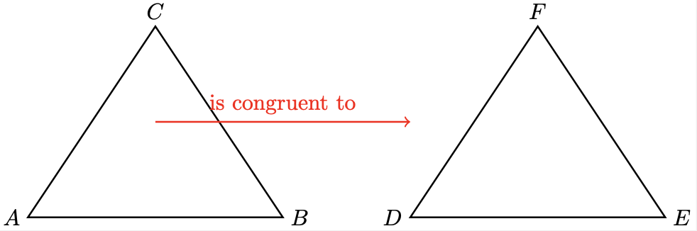

Group Theory in Haskell
Table of Contents
1. Introduction
There are a lot of introductions to group theory, but I wanted to do one in the Haskell programming language. For more about Haskell see the haskellbook, this article will assume some Haskell programming knowledge.
1.1. Motivation
There are two major motivations for group theory. The first comes from geometry. The geometer Felix Klein tried to find the essence of Euclidean geometry. His answer was that geometry is essentially about transformations of the plane that preserve distance. Another way to express this:
When a geometer makes a proof that triangle \(ABC\) is congruent to triangle \(DEF\) what they are saying is that there exists some transformation of the plane \({\color{red} f : \mathbb{R}^2 \to \mathbb{R}^2}\), so that \(f(ABC) = DEF\). The distance-preserving property could be expressed precisely as \(d(p,q) = d(f(p),f(q))\).

When you consider the set of all such transformations of the plane, you get a structured object called a group. These objects are worthy of study on their own because they show up in many other seemingly unrelated contexts. Like algebra.
Another major motivation for studying groups came from algebra. A young frenchman named Évariste Galois was studying algebra, particularly the existence of solutions to polynomial equations, like:
\[x^3 + 6x^2 + 11x - 20 = 0\]
He developed a theory of how to transform the "zeros" of the polynomial equations, and these also form a group, like Klein's geometric transformations. Galois worked out a theory for why some equations (like quadratics and cubics) have general solutions, and why others don't. The Galois group is central to that theory.
So the idea of a group arises in both algebra and geometry. It shows up in physics too, it's one of those fundamental ideas whose time came in the 19th century. The study of groups is considered the first form of "Modern Algebra". Groups are essential to understanding symmetry, and symmetry is essential to understanding the physical world. The Standard Model of Particle Physics is a glorified study of one particular group: \(U(1) \times U(2) \times SU(3)\), and the application of that one group is… all the forces and fields in the universe except gravity. What's extraordinary is how we can start studying groups here on paper and in a Haskell REPL.
2. Definition of a group
A group is a pair, \((G, * )\) where \(G\) is a non-empty set, and \(*:G\times G \to G\) where the following laws apply:
- Associativity: \((a * b) * c = a * (b * c)\) for all \(a,b,c \in G\)
- Identity: There exists an \(e \in G\) such that \(e * a = a * e = a\) for all \(a \in G\)
- Invertibility: there's a \(b\) for every \(a\) such that \(a * b = b * e = e\)
2.1. Haskell definition of a group
In Haskell, a type g is an instance of a Group if it's a Monoid with an invert function:
class Monoid g => Group g where invert :: m -> m
Such that
a <> (invert a) == (invert a) <> a == mempty
mempty is the Monoid unit, it's the \(e\) in the mathmetical definition above.
The notation used for the inverse of a group element is the superscript -1, so \(a * a^{-1} = e\) means that \(a^{-1}\) is the inverse of \(a\).
Another convention used is to drop the infix \(*\) and just use multiplication notation, so \(aa^{-1}=a^{-1}a=e\)
3. The Symmetric Group
The first example of a group we should introduce is the Symmetric group \(\text{Sym}(X)\) on a set \(X\). The definition of this group is \[\text{Sym}(X) = \{ f:X \to X | \text{ where \(f^{-1}\) exists} \}\]
Where the group operation is \(\circ\), function composition. Let's check the definition of group above. The identity function exists. Inverses are in the set by definition. What about associativity?
3.0.1. Proof that function composition is associative:
Function types have an instance of Monoid typeclass which proves that function composition is associative.
instance Monoid m => Monoid (r -> m) where mempty _ = mempty f `mappend` g = \x -> f x `mappend` g x
Exercise: Check that this Haskell code compiles.
3.1. Examples of Symmetric Groups on Finite sets
There are two special notations for permutations. We defined \(\text{Sym}(X)\) using functions with inverses, but since we are thinking about these functions as objects in themselves, let's introduce a special syntax.
3.1.1. pmatrix notation
Let's start with \(X = \{0, 1, 2\}\), the three-element set. To represent an invertible function, we can just make a two-row table like this:
\[\begin{pmatrix} 0 & 1 & 2 \\ 1 & 0 & 2 \\ \end{pmatrix}\]
The permutation notation takes the set \(X\) as the first row, and then the set \(f(X)\) as the second row:
\[\begin{pmatrix} x_0 & ... & x_n \\ f(x_0) & ... & f(x_n) \\ \end{pmatrix}\]
Another name used for the Symmetric group on an n-element set is \(S_n\). The group operation for \(S_3\) is function composition, so as an example,
\[\begin{pmatrix} 0 & 1 & 2 \\ 1 & 0 & 2 \\ \end{pmatrix}\circ\begin{pmatrix} 0 & 1 & 2 \\ 1 & 0 & 2 \\ \end{pmatrix} = \begin{pmatrix} 0 & 1 & 2 \\ 0 & 1 & 2 \\ \end{pmatrix}\]
The \(\begin{pmatrix} 0 & 1 & 2 \\ 0 & 1 & 2 \\ \end{pmatrix}\) element is the identity, since it takes each element of \(X\) to itself.
3.1.2. Cycle notation
Notice in 3.1.1 what the \(\begin{pmatrix} 0 & 1 & 2 \\ 1 & 0 & 2 \\ \end{pmatrix}\) element is doing. It is swapping 0 and 1. This is a transposition, whic means it swaps two elements. In cycle notation it would be \((0 \space 1)\).
If you chain together transpositions \((0\space 1)\) and \((1\space 2)\) you get longer cycles (by convention I am dropping the \(\circ\) and just juxtaposing the elements):
\[(0 \space 1)(1\space 2) = (0\space 1 \space 2)\]
The cycle notation is more compact, but harder to implement in code. We will do both in the next section to demonstrate how to implement different notations on Haskell's algebraic type system.
Now let's implement \(S_3\) in Haskell and make it easy to interactively work with at the REPL.
3.2. Data.Group.Permutation in Haskell
Since Monoid is so central to Haskell code, it's easy to work with Groups, since they are just Monoids with an inverse function (see 2.1). In Haskell, the analog of a set is a type. So taking our set \(X = \{0,1,2\}\), the statement \(1 \in X\) is expressed as 1 :: X in Haskell. The elements of a set are analogous to the inhabitants of a type. In the example below, we define a type X with three inhabitants.
3.2.1. show function for pmatrix notation
import Data.Group.Permutation data X = Zero | One | Two deriving (Eq, Show) -- show permutations in the notation above instance Show Permutation X where show (Permutation f _) = "\\begin{pmatrix}Zero & One & Two \\\\" ++ show(f(Zero)) ++ " & " ++ show(f(One)) ++ " & " ++ show(f(Two)) ++ " " ++ "\\end{pmatrix}" -- Defining the elements of S₃ s0 = Permutation id id -- identity permutation s1 = Permutation (\x -> if x==Zero then One else x) (\x -> if x==One then Zero else x)
3.3. Exercises (in Haskell)
- Define the group \(S_3\)
- Let \(g_1, ..., g_n \in G\) where \(G\) is a group, prove that \[(g_1g_2...g_n)^{-1} = (g_n^{-1}g_{n-1}^{-1}...g_2^{-1}g_1^{-1})\]
4. Appendix
4.1. My literate programming workflow for this document
I wrote this document in org-mode in Emacs. I export the org file to html to generate the website, and then I run org-babel-tangle to produce the Haskell code. To speed up the workflow I made the function below and then bound it to <F5>
(defun org-babel-tangle-and-compile-perms () "Tangle and compile perms.hs" (interactive) (progn (org-babel-tangle) (compile "/opt/homebrew/bin/stack exec -- ghc perms.hs")))
4.2. The main function
./perms.hs is a literate program that this org-mode document produces. Supporting code to make the file compile and run is defined down here in the appendix.
module Main where import Data.Group.Permutation data X = Zero | One | Two deriving (Eq, Show) -- show permutations in the notation above instance Show Permutation X where show (Permutation f _) = "\\begin{pmatrix}Zero & One & Two \\\\" ++ show(f(Zero)) ++ " & " ++ show(f(One)) ++ " & " ++ show(f(Two)) ++ " " ++ "\\end{pmatrix}" -- Defining the elements of S₃ s0 = Permutation id id -- identity permutation s1 = Permutation (\x -> if x==Zero then One else x) (\x -> if x==One then Zero else x) main :: IO main = do print s0 print s1
4.3. the package.yaml file, where we add dependencies
dependencies:
- base >= 4.7 && < 5
- group-theory